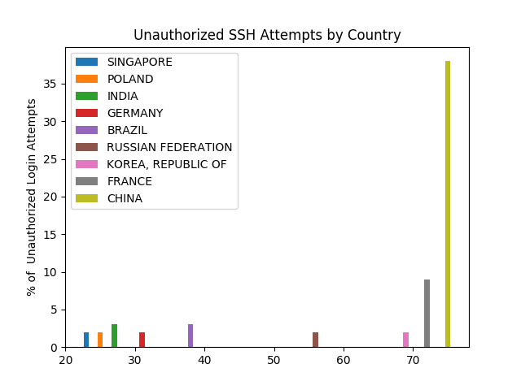

Networking and Cybersecurity became an interest of mine a few years ago. This project represents
an interesting opportunity for me to get some first hand knowledge with the inner workings of the
how the internet works, and how some essential protocols operate. One of the first things I quickly
learned was that there is a continuous influx of requests attempting to take control of your machine.
They literally come from across the world, likely machines taken over by a worm or virus and either
forgotten, abandoned, unknowingly infected... Regardless there is a distinct background radiation that
is simply a fact, and must be accounted for. This machine gets an average of around 2k login attempts a day.
This generally means it's better for everyone if worms do not spread, and users are more informed about
security threats.